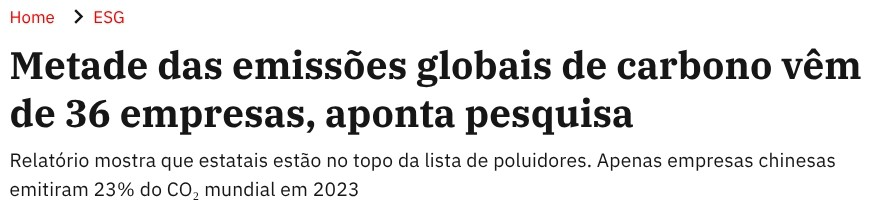
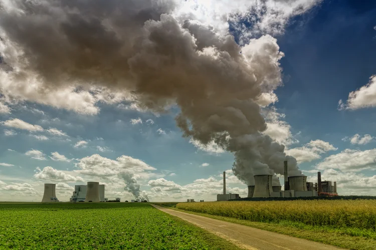
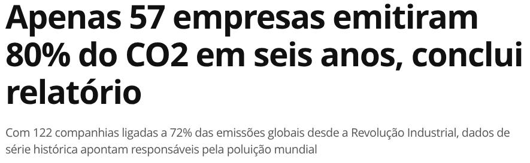
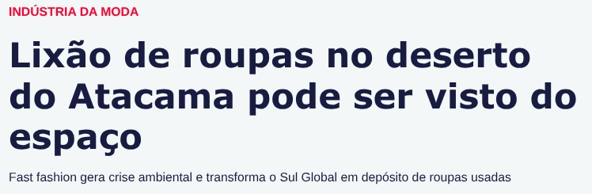
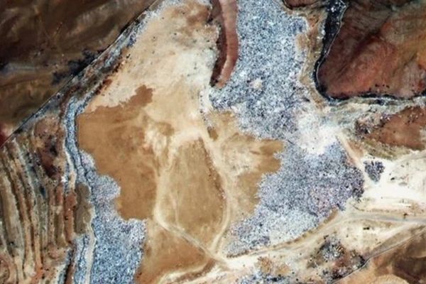
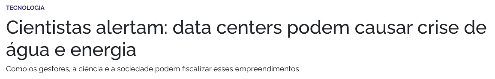
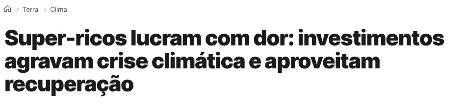
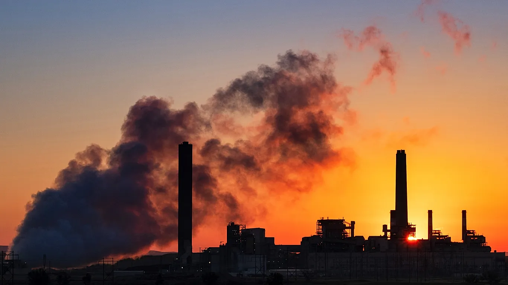

E as Grandes Empresas?
Embora as ações individuais sejam importantes, grandes corporações possuem enorme influência sobre emissões de gases, consumo de recursos, geração de resíduos e desmatamento.
🏭 Emissões Industriais
Setores industriais e energéticos estão entre os maiores emissores de gases de efeito estufa.
Você sabia?
Relatório do Pnuma aponta que os compromissos climáticos atuais são insuficientes para conter a crise e alerta que é necessário um corte de 18% das emissões até 2030 para evitar agravamento da crise climática. Saiba mais.
🌳 Desmatamento
Cadeias produtivas podem estimular a remoção de vegetação nativa.
Você sabia?
A expulsão de comunidades indígenas de seus territórios está intrinsecamente ligada ao aumento do desmatamento e da degradação ambiental, uma vez que a presença indígena atua como um escudo de preservação florestal. Saiba mais.
🛢 Poluição
Vazamentos e descarte inadequado afetam rios, oceanos e solos.
Você sabia?
Mais de uma vez, indústrias gigantes notaram que pagar o custo da punição por multas é inferior ao investimento necessário para prevenir o dano ambiental. Saiba mais.
📦 Produção Excessiva
Modelos de consumo acelerado geram desperdício e esgotamento de recursos.
Você sabia?
O setor têxtil, intensivo em consumo de recursos como água e energia, tem 80% de seus resíduos, incluindo tecidos e roupas, destinados a aterros, incineradores e lixões. Saiba mais.
Notícias que você precisa conhecer


05/03/2025 • Matéria de Lia Rizzo, pela Exame • Veja a matéria completa


10/04/2024 • Matéria pela Galileu • Veja a matéria completa


13/05/2025 • Matéria de Luiza Gonçalves, pela Correio • Veja a matéria completa
27/03/2024 • Matéria da Assessoria de Comunicação da ONU • Veja a matéria completa

22/09/2025 • Matéria de Diélen Borges, pela Comunica da UFU • Veja a matéria completa


27/10/2026 • Matéria de Angela Symons, pela Euro News • Veja a matéria completa
Nosso papel é duplo:
- Cuidar do planeta através de hábitos sustentáveis.
- Cobrar transparência e responsabilidade ambiental das empresas.
- Apoiar organizações comprometidas com sustentabilidade.
- Valorizar políticas ambientais e práticas ESG.